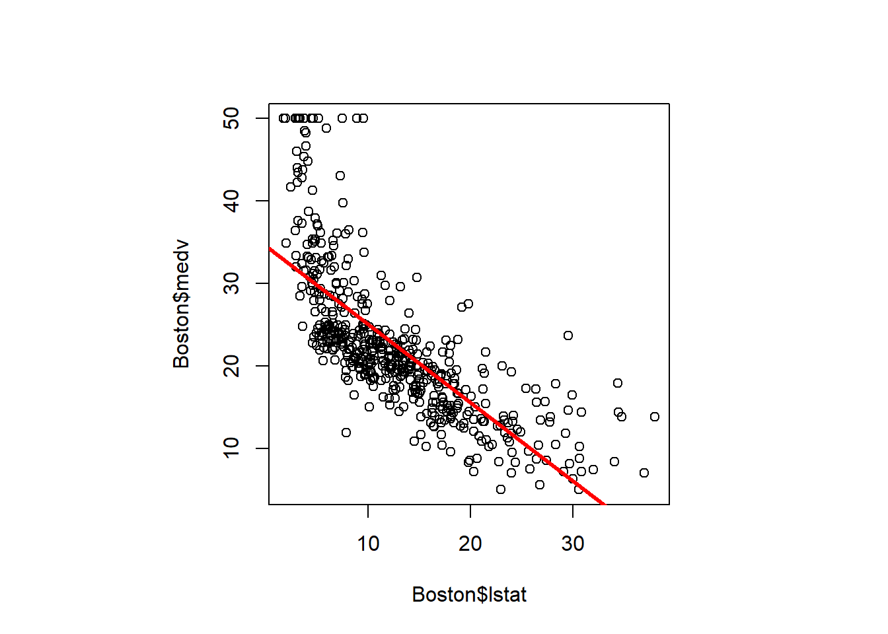
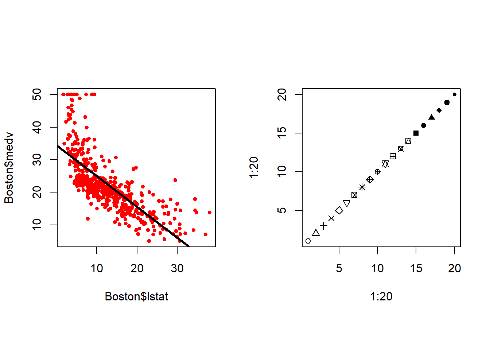
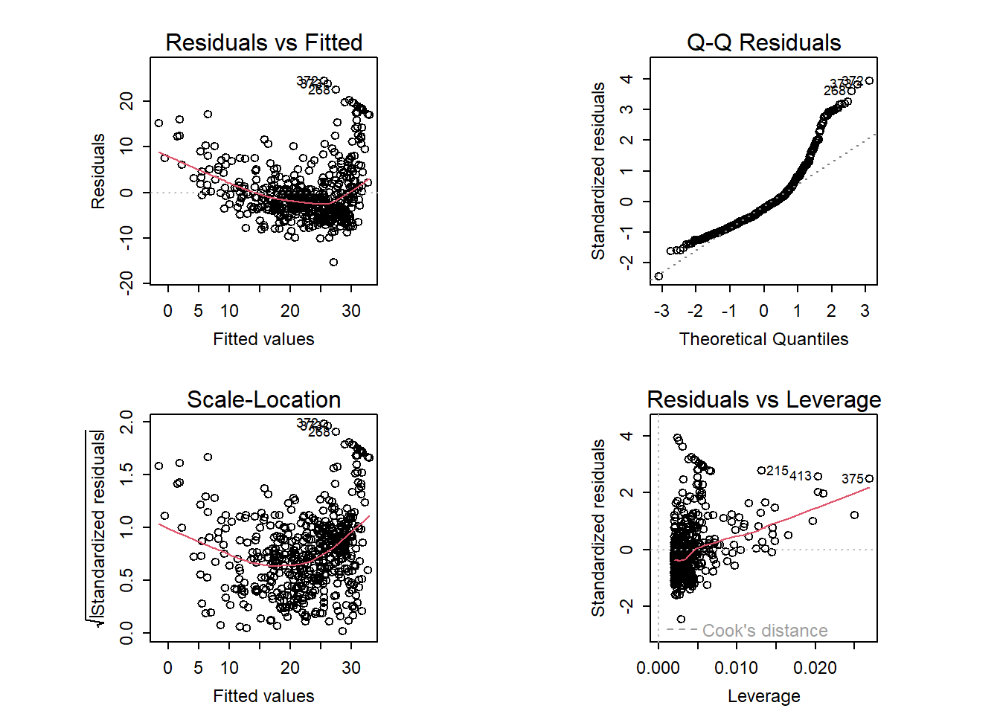
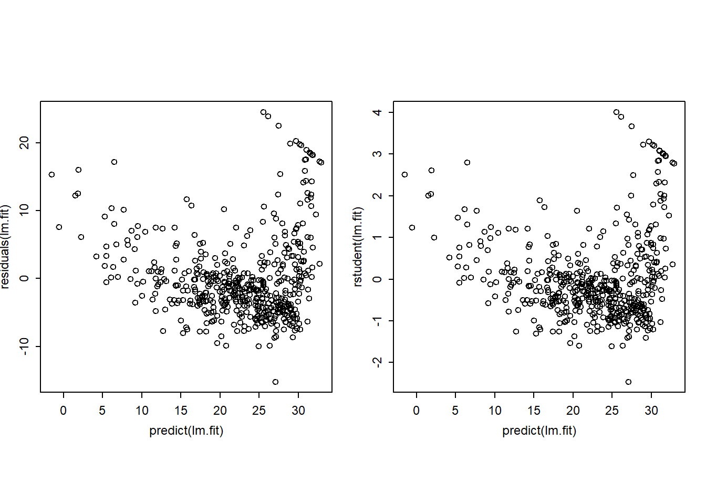
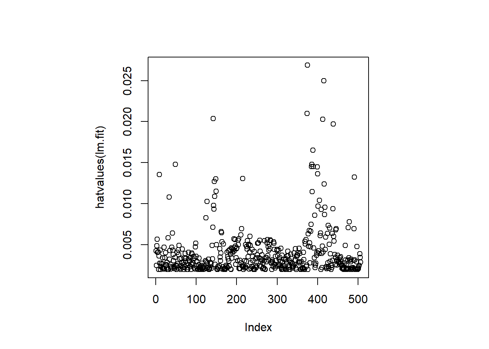
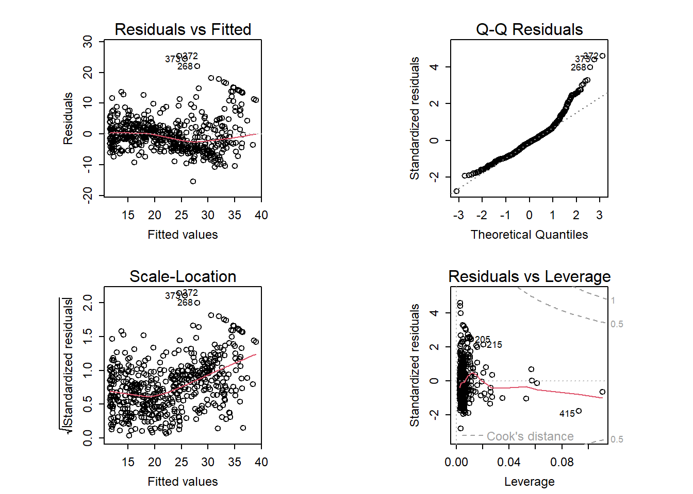

library(MASS)
library(ISLR2)
Adjuntando el paquete: 'ISLR2'The following object is masked from 'package:MASS':
Boston| Tipo | |
|---|---|
| Slides: | https://hastie.su.domains/ISLR2/Slides/Ch3_Linear_Regression.pdf\ |
| Lab-html: | https://hastie.su.domains/ISLR2/Labs/Rmarkdown_Notebooks/Ch3-linreg-lab.html |
| Lab-Rscript: | https://hastie.su.domains/ISLR2/Labs/R_Labs/Ch3-linreg-lab.R |
| Data: | Boston y Carseats (ISLR2) |
Las funciones básicas para realizar regresión lineal (simple o múltiple) de mínimos cuadrados y otros análisis sencillos vienen de serie con la distribución base, pero las funciones más “exóticas” requieren paquetes adicionales.
Paquetes: En el material original comenta las nociones básicas sobre cargar (o instalar cuando sea necesario) paquetes, que he resumido y trasladado al Anexo Herramientas.
Cargamos los paquetes MASS e ISLR2.
MASS es una gran colección de conjuntos de datos y funciones. Está disponible con la instalación base.ISLR2 incluye los conjuntos de datos asociados con el libro: https://www.statlearning.comlibrary(MASS)
library(ISLR2)
Adjuntando el paquete: 'ISLR2'The following object is masked from 'package:MASS':
BostonEl paquete ISLR2 contiene el conjunto de datos Boston, que registra medv (“median value”: valor mediano de las casas ocupadas por sus propietarios, en $1000s) para 506 distritos censales de Boston. Buscaremos predecir medv utilizando 12 predictores como rm (“room mean”: número promedio de habitaciones por casa), age (“casas construidas antes de 1940, en %”!!) y lstat (“lower status”: población de menor estatus -nivel socioeconómico bajo-, en %).
head(Boston) crim zn indus chas nox rm age dis rad tax ptratio lstat medv
1 0.00632 18 2.31 0 0.538 6.575 65.2 4.0900 1 296 15.3 4.98 24.0
2 0.02731 0 7.07 0 0.469 6.421 78.9 4.9671 2 242 17.8 9.14 21.6
3 0.02729 0 7.07 0 0.469 7.185 61.1 4.9671 2 242 17.8 4.03 34.7
4 0.03237 0 2.18 0 0.458 6.998 45.8 6.0622 3 222 18.7 2.94 33.4
5 0.06905 0 2.18 0 0.458 7.147 54.2 6.0622 3 222 18.7 5.33 36.2
6 0.02985 0 2.18 0 0.458 6.430 58.7 6.0622 3 222 18.7 5.21 28.7Para obtener más información sobre el conjunto de datos, podemos escribir ?Boston.
lm() (ajustar modelos)Comenzaremos usando la función lm() para ajustar un modelo de regresión lineal simple, con medv como variable respuesta y lstat como variable predictora. La sintaxis básica es lm(y ~ x, data), donde y es la respuesta, x es el predictor y data es el conjunto de datos en el que están las dos variables.
lm.fit <- lm(medv ~ lstat, data = Boston)Nota: Al proporcionar data = Boston, se le dice a R que las variables medv y lstat están en Boston. Si no se le proporciona el valor de data R busca en el Environment, y si allí no están las variables muestra un error.
Si escribimos lm.fit, se muestra información básica sobre el modelo: coeficientes.
Para obtener información más detallada: summary(lm.fit) que nos devuelve p-valores y errores estándar para los coeficientes, así como el estadístico \(R^2\) y el estadístico \(F\) para el modelo.
lm.fit
Call:
lm(formula = medv ~ lstat, data = Boston)
Coefficients:
(Intercept) lstat
34.55 -0.95 summary(lm.fit)
Call:
lm(formula = medv ~ lstat, data = Boston)
Residuals:
Min 1Q Median 3Q Max
-15.168 -3.990 -1.318 2.034 24.500
Coefficients:
Estimate Std. Error t value Pr(>|t|)
(Intercept) 34.55384 0.56263 61.41 <2e-16 ***
lstat -0.95005 0.03873 -24.53 <2e-16 ***
---
Signif. codes: 0 '***' 0.001 '**' 0.01 '*' 0.05 '.' 0.1 ' ' 1
Residual standard error: 6.216 on 504 degrees of freedom
Multiple R-squared: 0.5441, Adjusted R-squared: 0.5432
F-statistic: 601.6 on 1 and 504 DF, p-value: < 2.2e-16Nota Víctor: El material original no comenta algo fundamental de la salida anterior… ¿cómo se interpretan los coeficientes?, ¿p-valores?… ¿\(R^2\)?… En el Capítulo Modelización lineal del libro Fundamentos de ciencia de datos con R (“CDR”) se puede encontrar las respuestas de las preguntas anteriores.
Podemos usar la función names() para averiguar qué otra información se almacena en lm.fit.
names(lm.fit) [1] "coefficients" "residuals" "effects" "rank"
[5] "fitted.values" "assign" "qr" "df.residual"
[9] "xlevels" "call" "terms" "model" Aunque podemos extraer dicha información por su nombre —p.ej. lm.fit$coefficients — es más seguro usar las funciones de extracción como coef() para acceder a ellas.
coef(lm.fit)(Intercept) lstat
34.5538409 -0.9500494 Para obtener el intervalo de confianza para las estimaciones de los coeficientes, podemos usar la función confint().
confint(lm.fit) 2.5 % 97.5 %
(Intercept) 33.448457 35.6592247
lstat -1.026148 -0.8739505La función predict() se puede utilizar para producir intervalos de confianza e intervalos de predicción para la predicción de medv para un valor dado de lstat.
predict(lm.fit, data.frame(lstat = (c(5, 10, 15))),
interval = "confidence") fit lwr upr
1 29.80359 29.00741 30.59978
2 25.05335 24.47413 25.63256
3 20.30310 19.73159 20.87461predict(lm.fit, data.frame(lstat = (c(5, 10, 15))),
interval = "prediction") fit lwr upr
1 29.80359 17.565675 42.04151
2 25.05335 12.827626 37.27907
3 20.30310 8.077742 32.52846De estas salidas se obtiene, que el intervalo de confianza del 95% asociado con un valor lstat de 10 es (24.47, 25.63), y el intervalo de predicción del 95% es (12.83, 37.28). Como era de esperar, los intervalos de confianza y de predicción se centran en torno al mismo punto (un valor predicho de 25.05 para medv cuando lstat es igual a 10), pero estos últimos son sustancialmente más amplios.
Ahora dibujaremos medv y lstat junto con la recta de regresión de mínimos cuadrados (obtenida con el ajuste lm.fit) usando las funciones plot() y abline().
par(pty = "s") # sentencia añadida (no incluida en el código original)
# "p"lot "ty"pe "s"quare (recomendado para gráficos de dispersión)
plot(Boston$lstat, Boston$medv)
abline(lm.fit, lwd = 3, col = "red") # a=intercept, b=slope
Hay alguna evidencia de no linealidad en la relación entre lstat y medv. Exploraremos este problema más adelante en esta práctica.
La función abline() se puede usar para dibujar cualquier recta, no solo la recta de regresión de mínimos cuadrados. Para dibujar una recta con intersección a y pendiente b, escribimos abline(a, b). El argumento lwd = 3 hace que el ancho de la recta de regresión aumente en un factor de 3; esto también funciona para las funciones plot() y lines(). También podemos usar la opción pch para crear diferentes símbolos de trazado.
par(mfrow = c(1, 2), pty = "s") # gráficos en formato: 1 fila y 2 columnas
plot(Boston$lstat, Boston$medv, col = "red", pch = 20)
abline(lm.fit, lwd = 3)
#plot(Boston$lstat, Boston$medv, pch = "+")
plot(1:20, 1:20, pch = 1:20)
A continuación examinamos algunos diagramas de diagnóstico, varios de los cuales se discuten en la Sección 3.3.3 del libro. Al aplicar la función plot() a la salida de lm() se producen automáticamente 4 gráficos de diagnóstico.
Nota técnica: En la consola esta función producirá un gráfico, y al presionar ENTER se generará el siguiente gráfico, etc. Sin embargo, a menudo es conveniente ver los cuatro gráficos juntos. Podemos lograr esto usando las funciones par() y mfrow(), que le dicen a R que divida la pantalla de visualización en paneles separados para que se puedan ver múltiples gráficos simultáneamente. Por ejemplo, par(mfrow = c(2, 2)) divide la ventana de gráficos en una cuadrícula de paneles de 2x2.
par(mfrow = c(2, 2),
pty = "s",
mex = 0.66,
cex = 0.75)
plot(lm.fit)
Alternativamente, podemos calcular los residuos de un ajuste de regresión lineal usando la función residuals(). La función rstudent() devolverá los residuos studentizados, y podemos usar esta función para dibujar los residuos contra los valores ajustados.
par(mfrow = c(1, 2),
pty = "s",
mex = 0.66,
cex = 0.75)
plot(predict(lm.fit), residuals(lm.fit))
plot(predict(lm.fit), rstudent(lm.fit))
Sobre la base de las gráficas residuales, existe alguna evidencia de no linealidad. Los estadísticos de apalancamiento (Leverage) se pueden calcular para cualquier número de predictores usando la función hatvalues().
par(mfrow = c(1, 1), pty = "s")
plot(hatvalues(lm.fit))
which.max(hatvalues(lm.fit))375
375 La función which.max() identifica el índice del elemento más grande de un vector. En este caso, nos dice qué observación tiene el estadístico de apalancamiento más grande.
Para ajustar un modelo de regresión lineal múltiple usando mínimos cuadrados, nuevamente usamos la función lm(). La sintaxis lm(y ~ x1 + x2 + x3) se usa para ajustar un modelo con tres predictores, x1, x2 y x3. La función summary() mostrará los coeficientes de regresión para todos los predictores considerados.
lm.fit <- lm(medv ~ lstat + age, data = Boston)
summary(lm.fit)
Call:
lm(formula = medv ~ lstat + age, data = Boston)
Residuals:
Min 1Q Median 3Q Max
-15.981 -3.978 -1.283 1.968 23.158
Coefficients:
Estimate Std. Error t value Pr(>|t|)
(Intercept) 33.22276 0.73085 45.458 < 2e-16 ***
lstat -1.03207 0.04819 -21.416 < 2e-16 ***
age 0.03454 0.01223 2.826 0.00491 **
---
Signif. codes: 0 '***' 0.001 '**' 0.01 '*' 0.05 '.' 0.1 ' ' 1
Residual standard error: 6.173 on 503 degrees of freedom
Multiple R-squared: 0.5513, Adjusted R-squared: 0.5495
F-statistic: 309 on 2 and 503 DF, p-value: < 2.2e-16El conjunto de datos Boston contiene 12 variables, por lo que sería engorroso tener que escribirlas todas para realizar una regresión usando todos los predictores. En su lugar, podemos usar la siguiente abreviatura:
lm.fit <- lm(medv ~ ., data = Boston)
summary(lm.fit)
Call:
lm(formula = medv ~ ., data = Boston)
Residuals:
Min 1Q Median 3Q Max
-15.1304 -2.7673 -0.5814 1.9414 26.2526
Coefficients:
Estimate Std. Error t value Pr(>|t|)
(Intercept) 41.617270 4.936039 8.431 3.79e-16 ***
crim -0.121389 0.033000 -3.678 0.000261 ***
zn 0.046963 0.013879 3.384 0.000772 ***
indus 0.013468 0.062145 0.217 0.828520
chas 2.839993 0.870007 3.264 0.001173 **
nox -18.758022 3.851355 -4.870 1.50e-06 ***
rm 3.658119 0.420246 8.705 < 2e-16 ***
age 0.003611 0.013329 0.271 0.786595
dis -1.490754 0.201623 -7.394 6.17e-13 ***
rad 0.289405 0.066908 4.325 1.84e-05 ***
tax -0.012682 0.003801 -3.337 0.000912 ***
ptratio -0.937533 0.132206 -7.091 4.63e-12 ***
lstat -0.552019 0.050659 -10.897 < 2e-16 ***
---
Signif. codes: 0 '***' 0.001 '**' 0.01 '*' 0.05 '.' 0.1 ' ' 1
Residual standard error: 4.798 on 493 degrees of freedom
Multiple R-squared: 0.7343, Adjusted R-squared: 0.7278
F-statistic: 113.5 on 12 and 493 DF, p-value: < 2.2e-16Nota Víctor: De nuevo, el material original no interpreta la salida anterior donde hay coeficientes positivos y negativos, ¡significativos y no significativos! ¿\(R^2\)? ¿significación global del modelo?… (véase el citado Capítulo Modelización lineal del libro “CDR”).
Como antes, se puede acceder por nombre a los componentes individuales, ahora del objeto de resumen (escriba ?summary.lm para ver qué hay disponible). Así
summary(lm.fit)$r.sq nos da el \(R^2\), ysummary(lm.fit)$sigma nos da el Residual standard error.vif()La función vif(), del paquete car, se puede utilizar para calcular los factores de inflación de la varianza. El paquete car no forma parte de la instalación básica de R, por lo que debe instalarse para poder usarlo (véase el Anexo Herramientas).
Para estos datos, la mayoría de los VIF son bajos o moderados.
library(car)Cargando paquete requerido: carDatavif(lm.fit) crim zn indus chas nox rm age dis
1.767486 2.298459 3.987181 1.071168 4.369093 1.912532 3.088232 3.954037
rad tax ptratio lstat
7.445301 9.002158 1.797060 2.870777 Nota Víctor: Regla de decisión: No preocuparse de la multicolinealidad si
vif < 5, inclusovif < 10.
¿Qué pasa si se quiere realizar una regresión usando todas las variables menos una (o varias)? Por ejemplo, en el resultado de la regresión anterior, age tiene un p-valor alto. Entonces, es posible que deseemos ejecutar una regresión que excluya este predictor. La siguiente sintaxis da como resultado una regresión que usa todos los predictores excepto age.
lm.fit1 <- lm(medv ~ . - age, data = Boston)
summary(lm.fit1)
Call:
lm(formula = medv ~ . - age, data = Boston)
Residuals:
Min 1Q Median 3Q Max
-15.1851 -2.7330 -0.6116 1.8555 26.3838
Coefficients:
Estimate Std. Error t value Pr(>|t|)
(Intercept) 41.525128 4.919684 8.441 3.52e-16 ***
crim -0.121426 0.032969 -3.683 0.000256 ***
zn 0.046512 0.013766 3.379 0.000785 ***
indus 0.013451 0.062086 0.217 0.828577
chas 2.852773 0.867912 3.287 0.001085 **
nox -18.485070 3.713714 -4.978 8.91e-07 ***
rm 3.681070 0.411230 8.951 < 2e-16 ***
dis -1.506777 0.192570 -7.825 3.12e-14 ***
rad 0.287940 0.066627 4.322 1.87e-05 ***
tax -0.012653 0.003796 -3.333 0.000923 ***
ptratio -0.934649 0.131653 -7.099 4.39e-12 ***
lstat -0.547409 0.047669 -11.483 < 2e-16 ***
---
Signif. codes: 0 '***' 0.001 '**' 0.01 '*' 0.05 '.' 0.1 ' ' 1
Residual standard error: 4.794 on 494 degrees of freedom
Multiple R-squared: 0.7343, Adjusted R-squared: 0.7284
F-statistic: 124.1 on 11 and 494 DF, p-value: < 2.2e-16Alternativamente, se puede usar la función update().
lm.fit1 <- update(lm.fit, ~ . - age)Nota Víctor: ¿Cómo quitar varios predictores?
Es fácil incluir términos de interacción en un modelo lineal utilizando la función lm(). La sintaxis lstat:black le dice a R que incluya un término de interacción entre lstat y black. La sintaxis lstat * age incluye simultáneamente lstat, age y el término de interacción lstat:age como predictores; es una abreviatura de lstat + age + lstat:age.
summary(lm(medv ~ lstat * age, data = Boston))
Call:
lm(formula = medv ~ lstat * age, data = Boston)
Residuals:
Min 1Q Median 3Q Max
-15.806 -4.045 -1.333 2.085 27.552
Coefficients:
Estimate Std. Error t value Pr(>|t|)
(Intercept) 36.0885359 1.4698355 24.553 < 2e-16 ***
lstat -1.3921168 0.1674555 -8.313 8.78e-16 ***
age -0.0007209 0.0198792 -0.036 0.9711
lstat:age 0.0041560 0.0018518 2.244 0.0252 *
---
Signif. codes: 0 '***' 0.001 '**' 0.01 '*' 0.05 '.' 0.1 ' ' 1
Residual standard error: 6.149 on 502 degrees of freedom
Multiple R-squared: 0.5557, Adjusted R-squared: 0.5531
F-statistic: 209.3 on 3 and 502 DF, p-value: < 2.2e-16La función lm() también admite transformaciones no lineales de los predictores. Por ejemplo, dado un predictor X, podemos crear un predictor X^2 usando I(X^2) (véase el Anexo Herramientas). Realizamos la regresión de medv sobre lstat y lstat^2.
lm.fit2 <- lm(medv ~ lstat + I(lstat^2), data = Boston)
summary(lm.fit2)
Call:
lm(formula = medv ~ lstat + I(lstat^2), data = Boston)
Residuals:
Min 1Q Median 3Q Max
-15.2834 -3.8313 -0.5295 2.3095 25.4148
Coefficients:
Estimate Std. Error t value Pr(>|t|)
(Intercept) 42.862007 0.872084 49.15 <2e-16 ***
lstat -2.332821 0.123803 -18.84 <2e-16 ***
I(lstat^2) 0.043547 0.003745 11.63 <2e-16 ***
---
Signif. codes: 0 '***' 0.001 '**' 0.01 '*' 0.05 '.' 0.1 ' ' 1
Residual standard error: 5.524 on 503 degrees of freedom
Multiple R-squared: 0.6407, Adjusted R-squared: 0.6393
F-statistic: 448.5 on 2 and 503 DF, p-value: < 2.2e-16El p-valor cercano a cero asociado con el término cuadrático sugiere que, su inclusión, conduce a un modelo mejorado.
anova()Usamos la función anova() (véase el Anexo Herramientas) para cuantificar aún más hasta qué punto el ajuste cuadrático es superior al ajuste lineal.
lm.fit <- lm(medv ~ lstat, data = Boston)
anova(lm.fit, lm.fit2)Analysis of Variance Table
Model 1: medv ~ lstat
Model 2: medv ~ lstat + I(lstat^2)
Res.Df RSS Df Sum of Sq F Pr(>F)
1 504 19472
2 503 15347 1 4125.1 135.2 < 2.2e-16 ***
---
Signif. codes: 0 '***' 0.001 '**' 0.01 '*' 0.05 '.' 0.1 ' ' 1Aquí, el Modelo 1 representa el “submodelo” lineal que contiene solo un predictor, lstat, es decir lm.fit, mientras que el Modelo 2 corresponde al modelo cuadrático, modelo “completo”, que tiene dos predictores, lstat y lstat^2, llamado lm.fit2. Aquí el estadístico \(F\) es 135 y el p-valor asociado es virtualmente cero. Esto proporciona una evidencia muy clara de que el modelo que contiene los predictores lstat y lstat^2 es muy superior al modelo que solo contiene el predictor lstat. Esto no es sorprendente, ya que anteriormente vimos evidencia de no linealidad en la relación entre medv y lstat. Si escribimos
par(mfrow = c(2, 2),
pty = "s",
mex = 0.66,
cex = 0.75)
plot(lm.fit2)
vemos que cuando el término lstat^2 se incluye en el modelo, hay un patrón poco perceptible en los residuos.
Nota Víctor: es lo deseable, que los residuos NO tengan estructura (sean ruido blanco)
Para crear un ajuste cúbico, podemos incluir un predictor de la forma I(X^3). Sin embargo, existe un mejor enfoque consistente en usar la función poly() para crear el polinomio dentro de lm() (véase el Anexo Herramientas). Por ejemplo, la siguiente sentencia produce un ajuste polinomial de quinto orden:
lm.fit5 <- lm(medv ~ poly(lstat, 5), data = Boston)
summary(lm.fit5)
Call:
lm(formula = medv ~ poly(lstat, 5), data = Boston)
Residuals:
Min 1Q Median 3Q Max
-13.5433 -3.1039 -0.7052 2.0844 27.1153
Coefficients:
Estimate Std. Error t value Pr(>|t|)
(Intercept) 22.5328 0.2318 97.197 < 2e-16 ***
poly(lstat, 5)1 -152.4595 5.2148 -29.236 < 2e-16 ***
poly(lstat, 5)2 64.2272 5.2148 12.316 < 2e-16 ***
poly(lstat, 5)3 -27.0511 5.2148 -5.187 3.10e-07 ***
poly(lstat, 5)4 25.4517 5.2148 4.881 1.42e-06 ***
poly(lstat, 5)5 -19.2524 5.2148 -3.692 0.000247 ***
---
Signif. codes: 0 '***' 0.001 '**' 0.01 '*' 0.05 '.' 0.1 ' ' 1
Residual standard error: 5.215 on 500 degrees of freedom
Multiple R-squared: 0.6817, Adjusted R-squared: 0.6785
F-statistic: 214.2 on 5 and 500 DF, p-value: < 2.2e-16Esto sugiere que la inclusión de términos polinómicos adicionales, hasta el quinto orden, ¡conduce a una mejora en el ajuste del modelo! Sin embargo, una investigación más profunda de los datos revela que ningún término polinomial más allá del quinto orden tiene p-valores significativos en un ajuste de regresión.
Nota técnica: en el Anexo Herramientas se menciona que la función ploy() ortogonaliza los predictores por defecto. Sin embargo un modelo lineal aplicado a la salida de la función poly() tendrá los mismos valores ajustados que un modelo lineal aplicado a los polinomios sin procesar (al incluir en poly el argumento raw = TRUE), aunque las estimaciones de los coeficientes, los errores estándar y los p-valores serán diferentes.
De ninguna manera estamos restringidos a usar sólo transformaciones polinómicas de los predictores. Aquí se realiza una transformación logarítmica.
summary(lm(medv ~ log(rm), data = Boston))
Call:
lm(formula = medv ~ log(rm), data = Boston)
Residuals:
Min 1Q Median 3Q Max
-19.487 -2.875 -0.104 2.837 39.816
Coefficients:
Estimate Std. Error t value Pr(>|t|)
(Intercept) -76.488 5.028 -15.21 <2e-16 ***
log(rm) 54.055 2.739 19.73 <2e-16 ***
---
Signif. codes: 0 '***' 0.001 '**' 0.01 '*' 0.05 '.' 0.1 ' ' 1
Residual standard error: 6.915 on 504 degrees of freedom
Multiple R-squared: 0.4358, Adjusted R-squared: 0.4347
F-statistic: 389.3 on 1 and 504 DF, p-value: < 2.2e-16Ahora examinaremos los datos Carseats, del paquete ISLR2. Intentaremos predecir Sales (ventas de asientos de seguridad para niños) en 4000 ubicaciones en función de una serie de predictores.
head(Carseats) Sales CompPrice Income Advertising Population Price ShelveLoc Age Education
1 9.50 138 73 11 276 120 Bad 42 17
2 11.22 111 48 16 260 83 Good 65 10
3 10.06 113 35 10 269 80 Medium 59 12
4 7.40 117 100 4 466 97 Medium 55 14
5 4.15 141 64 3 340 128 Bad 38 13
6 10.81 124 113 13 501 72 Bad 78 16
Urban US
1 Yes Yes
2 Yes Yes
3 Yes Yes
4 Yes Yes
5 Yes No
6 No YesEl conjunto de datos Carseats incluye predictores cualitativos como ShelveLoc, un indicador de la calidad de la ubicación de las estanterías, es decir, el espacio dentro de una tienda en el que se muestra el asiento para el automóvil. El predictor ShelveLoc toma tres valores posibles: Mala, Media y Buena (ubicación). Dada una variable cualitativa como ShelveLoc, R genera automáticamente variables ficticias, variables dummys. La función contrasts() devuelve la codificación que R usa para las variables ficticias (véase el Anexo Herramientas).
contrasts(Carseats$ShelveLoc) Good Medium
Bad 0 0
Good 1 0
Medium 0 1A continuación ajustamos un modelo de regresión múltiple, que también incluye algunos términos de interacción.
lm.fit <- lm(Sales ~ . + Income:Advertising + Price:Age,
data = Carseats)
summary(lm.fit)
Call:
lm(formula = Sales ~ . + Income:Advertising + Price:Age, data = Carseats)
Residuals:
Min 1Q Median 3Q Max
-2.9208 -0.7503 0.0177 0.6754 3.3413
Coefficients:
Estimate Std. Error t value Pr(>|t|)
(Intercept) 6.5755654 1.0087470 6.519 2.22e-10 ***
CompPrice 0.0929371 0.0041183 22.567 < 2e-16 ***
Income 0.0108940 0.0026044 4.183 3.57e-05 ***
Advertising 0.0702462 0.0226091 3.107 0.002030 **
Population 0.0001592 0.0003679 0.433 0.665330
Price -0.1008064 0.0074399 -13.549 < 2e-16 ***
ShelveLocGood 4.8486762 0.1528378 31.724 < 2e-16 ***
ShelveLocMedium 1.9532620 0.1257682 15.531 < 2e-16 ***
Age -0.0579466 0.0159506 -3.633 0.000318 ***
Education -0.0208525 0.0196131 -1.063 0.288361
UrbanYes 0.1401597 0.1124019 1.247 0.213171
USYes -0.1575571 0.1489234 -1.058 0.290729
Income:Advertising 0.0007510 0.0002784 2.698 0.007290 **
Price:Age 0.0001068 0.0001333 0.801 0.423812
---
Signif. codes: 0 '***' 0.001 '**' 0.01 '*' 0.05 '.' 0.1 ' ' 1
Residual standard error: 1.011 on 386 degrees of freedom
Multiple R-squared: 0.8761, Adjusted R-squared: 0.8719
F-statistic: 210 on 13 and 386 DF, p-value: < 2.2e-16El hecho de que el coeficiente de ShelveLocGood en el resultado de la regresión sea positivo indica que una buena ubicación de las estanterías está asociada con ventas altas (en comparación con una mala ubicación).
Nota Víctor: el comentario coincide con la lógica, pero, además, a) se cuantifica la magnitud del “aumento”, y b) lo que es mejor, el “cambio” es significativo.
Y ShelveLocMedium tiene un coeficiente positivo más pequeño, lo que indica que una ubicación de estantería media está asociada con ventas más altas que una ubicación de estantería mala, pero ventas más bajas que una ubicación de estantería buena.
En el Lab3 original se dedica este último apartado (pequeño) a la creación/escritura de funciones. Como su contenido es transversal se ha movido al Anexo Herramientas.